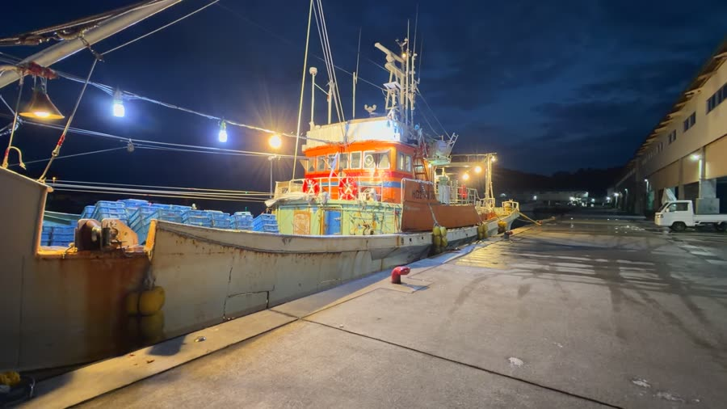
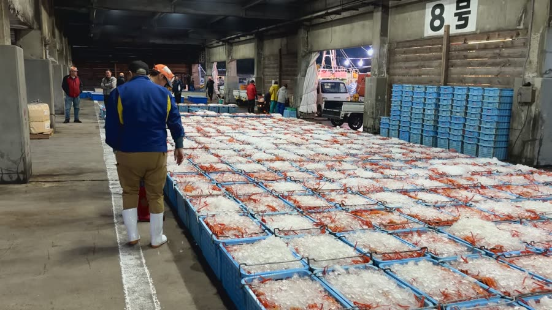
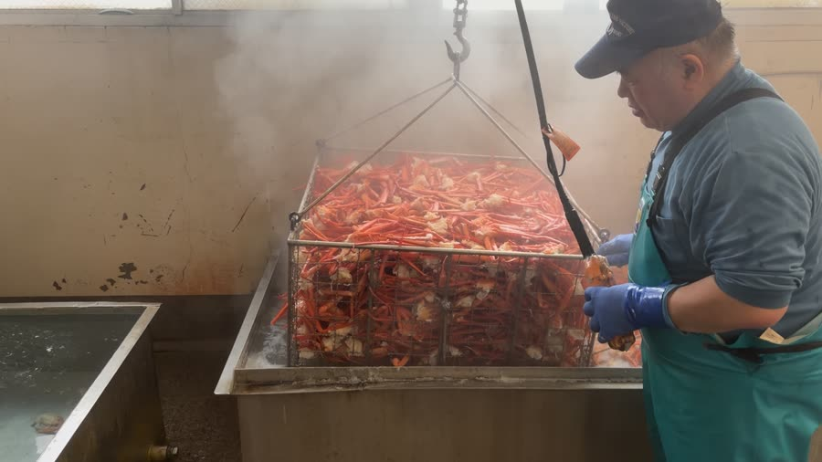
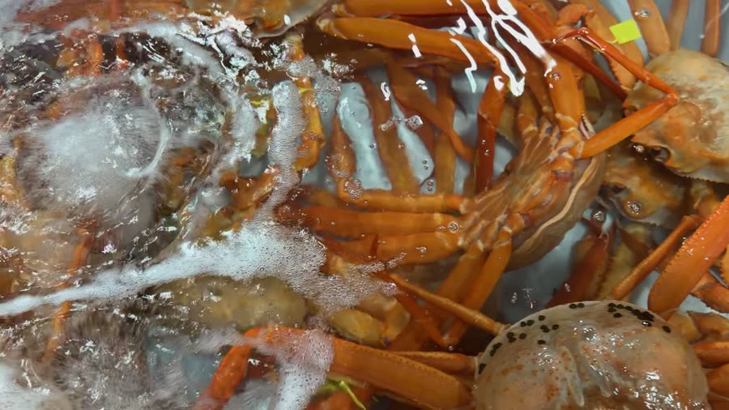

香住港
直送
直送
Our Crab
香住ガニとは。
兵庫・香住港で水揚げされる紅ズワイガニ。鮮度が命のこの蟹を、港のすぐそばで扱えることが丸近の何よりの強みです。
みずみずしい甘さと、とろけるような舌触り。獲れたてをその日のうちに茹で上げるからこそ味わえる、産地ならではの一杯をお届けします。
香住ガニの物語を読む →Kasumi Brand Crab 香住港のタグ付きブランド蟹「香住ガニ」。獲れたてを、獲れたてのままお届けします。
This Morning's Auction 水揚げされたばかりの香住ガニ。今朝の競りに、ずらりと並びます。
Boiled This Morning 水揚げしたその日に、浜で茹で上げる。


兵庫・香住港で水揚げされる紅ズワイガニ。鮮度が命のこの蟹を、港のすぐそばで扱えることが丸近の何よりの強みです。
みずみずしい甘さと、とろけるような舌触り。獲れたてをその日のうちに茹で上げるからこそ味わえる、産地ならではの一杯をお届けします。
香住ガニの物語を読む →香住港の目の前で選び抜いた一杯を、いちばん美味しい状態で直接お届けします。 「食べたい時に、贈りたい時に、すぐ」——それは産地の店だからできることです。
香住港の目の前で買付け。水揚げ当日に茹で上げて直送します。解禁シーズンはもちろん、冷凍加工品で通年ご用意しています。
買付け・加工・販売まで自社一貫。確かな品質だけを選び抜きます。
のし・メッセージカードは無料。お届け先を分けての発送も承ります。到着後のご相談まで、丁寧に対応いたします。
ふるさとチョイス
2019～2022年度
ふるさとチョイス
2019～2024年度
楽天ふるさと納税
2025年度
買付け・加工・販売まで自社一貫
産地だからできる目利き
| 原産地 | 兵庫県・香住港 水揚げ（香住ガニ＝紅ズワイガニ／松葉がに＝ズワイガニ） |
|---|---|
| 加工・製造者 | 株式会社丸近（香住港すぐの自社加工場で、買付けから加工まで一貫） |
| 保存方法 | 冷蔵品：要冷蔵（10℃以下）／冷凍品：要冷凍（-18℃以下） |
| 賞味期限 | 商品ごとに明記（例：冷凍品は製造日から約30日／解凍後はお早めにお召し上がりください） |
| アレルゲン | かに（特定原材料）。同一施設でえび等も取り扱っています。 |
| お支払い方法 | 各種クレジットカード／代金引換／コンビニ・後払い 等（詳しくは利用案内をご覧ください） |
日本海に面した小さな港町・香住で、丸近は一杯の蟹とともに歩んできました。移り変わる時代のなかで変わらなかったのは、「いちばん美味しい状態で届けたい」という一心と、港のすぐそばで確かな一杯を選び抜く目利きの心です。

香住の港町で、海の恵みを世に届ける歩みが始まりました。地元の海とともに生きる、丸近の原点です。

港のすぐそばで、買付けから加工・販売まで一貫して。確かな品質だけを選び抜く目を、代々受け継いできました。

ふるさと納税ランキングで全国1位の評価をいただき、香住ガニの美味しさが全国のご家庭へ届くようになりました。

地方から、世界へ。香住で育んだ味と感動を、次の世代とその先の食卓まで届けていきます。
香住ガニ・松葉がにには漁期があります。禁漁期（およそ6～8月）は生の提供をお休みし、冷凍加工品でお届けします。
毎年のお歳暮・鍋シーズンに便利な 定期便・リピート特典 もご用意予定です。
お写真付きレビューを募集中 届いたカニやお料理の写真とご感想を、ぜひお寄せください。次にお選びになる方の、いちばんの参考になります。
レビューを見る・投稿する年末年始のご挨拶に。冬の食卓が華やぐ、不動の人気ギフト。
冷凍加工品でオフシーズンも。ご無沙汰のご挨拶に。
出産・結婚・長寿のお祝い返しに。のし・表書き無料。
取引先への贈答や社内行事に。個数・熨斗はご相談を。
のし・メッセージカード無料／ラッピング対応／お届け先を分けての発送も承ります。
ご入用日の2～3日前までのご注文がおすすめです。天候による遅延に備え、余裕をもってお届け日をご指定ください。
紅ズワイガニ
みずみずしい甘さと、とろけるような舌触り。香住港ならではの鮮度が魅力です。
▶ 日常のごちそう・食べ盛りのご家庭に
ズワイガニ
締まった身と、濃厚で深い旨み。冬の味覚の王様と呼ばれる特別な一杯です。
▶ 特別な日・大切な方への贈り物に
松葉がにの雌
内子・外子のねっとり濃厚な味わい。旬が短い、知る人ぞ知る季節の逸品です。
▶ 通の味・秋冬の季節限定で
冷蔵庫で半日～一晩かけてゆっくり解凍。旨みのドリップを逃さず、獲れたての風味を保ちます。
浜茹では解凍してそのまま。鍋・かにすき・雑炊まで、部位別のおすすめ調理をご案内します。
冷凍品は到着後すぐ冷凍庫へ。解凍後はお早めに。冷蔵・冷凍それぞれの保存目安を明記します。
香住港より、鮮度を保ったままクール便（冷蔵／冷凍）で全国へお届けします。
商品ごとに税込・送料込みの総額を表示。冷蔵・冷凍は別便のため送料が分かれる場合があります。
ご注文から中2～3日が目安。着日・時間帯のご指定を承ります（一部地域・繁忙期を除く）。
お歳暮・年末は配送が集中します。着日指定不可期間が生じるため、お早めのご注文をおすすめします。
具体的な送料・お届け日数・対応エリアは、各商品ページおよび利用案内をご覧ください。